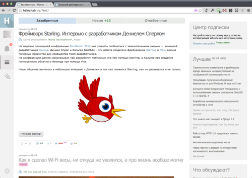
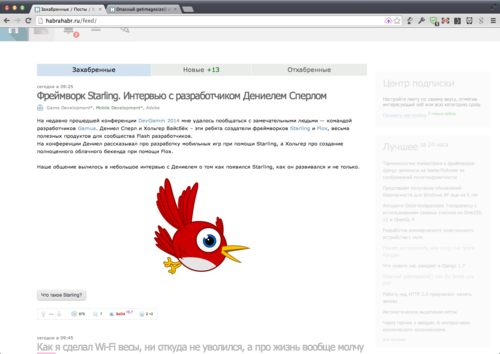
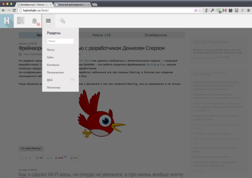

Пока некоторые гики негодуют на новый дизайн Хабра и лепят лютое говно, я пошел другим путем и запилил себе минимальный тюнинг, поднимающий удобство чтения Хабра до невероятных высот.
Было:

Стало:


Решение
Ставим на Хром Stylish или Styler и применяем следующие стили:
#layout {
padding-top: 75px;
}
#navbar,#navbar .nav_panel {
top: 0;
left: 0;
right: 0;
bottom: auto;
width: auto;
position: absolute;
}
#navbar .nav_panel {
height: 72px;
top: -36px;
-webkit-transition: top .3s ease-out;
transition: top .3s ease-out;
}
#navbar .nav_panel:hover {
top: 0;
}
#navbar .nav_panel .logo,#navbar .nav_panel .tab {
float: left;
}
#navbar .nav_panel .tab .count {
top: auto;
bottom: 9px;
}
#scroll_to_top {
display: none;
}
#navbar .nav_tabs_content.open {
top: 72px;
left: 146px;
height: 330px;
}
.sidebar_right {
opacity: .3;
-webkit-transition: opacity .3s ease-out;
transition: opacity .3s ease-out;
}
.sidebar_right:hover {
opacity: 1;
}
И все.